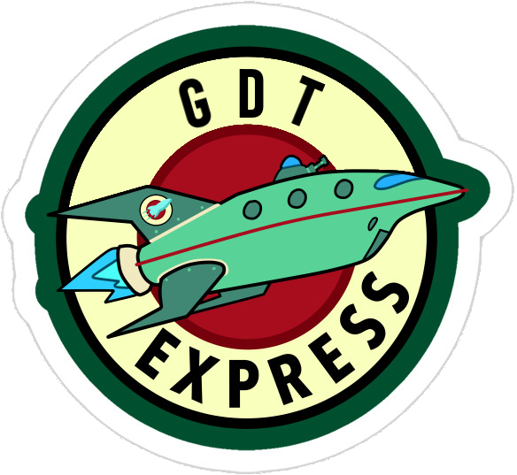

<nav class="navbar navbar-expand-md bg-dark navbar-dark fixed-top">
  <a class="ml-3 mr-2 p-0">
    
  </a>
  <button class="navbar-toggler" type="button" data-toggle="collapse" data-target="#navbarCollapse"
    aria-controls="navbarCollapse" aria-expanded="false" aria-label="Toggle navigation">
    <span class="navbar-toggler-icon"></span>
  </button>
  <ng-container *ngIf="collegueConnecte | async as col">
    <ng-container *ngIf="!col.estAnonyme()">

      <div class="collapse navbar-collapse" id="navbarCollapse">
        <ul class="navbar-nav mr-auto">

          <li class="nav-item">
            <a class="nav-link" routerLink="/collaborateur/reservations">Vos réservations</a>
          </li>
          <li class="nav-item">
            <a class="nav-link" routerLink="/collaborateur/annonces/creer">Vos annonces</a>
          </li>
          <li class="nav-item">
            <a class="nav-link" routerLink="/contact-create">Statistiques</a>
          </li>
        </ul>
        <ul class="navbar-nav ml-auto">
          <li class="nav-item dropdown">
            <a class="nav-link dropdown-toggle " href="#" id="navbarDropdown" role="button" data-toggle="dropdown"
              aria-haspopup="true" aria-expanded="false">
              Bonjour {{col.nom}}
            </a>
            <div class="dropdown-menu " aria-labelledby="navbarDropdown">
              <button  class="btn" (click)="seDeconnecter()" style="background-color:#004F2F;color:#F8FFB9"><fa-icon [icon]="iconeDisconnected"></fa-icon> Se déconnecter</button>
            </div>
          </li>
        </ul>
      </div>
    </ng-container>
  </ng-container>
</nav>


